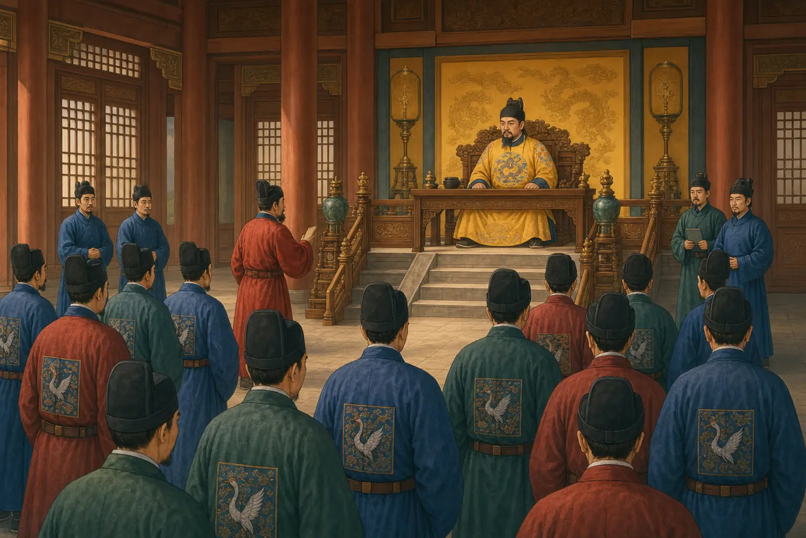

朱元璋为什么成了一个特别忙的皇帝？
Why Did Zhu Yuanzhang Become Such a Busy Emperor?
Page 1
八天里来了多少事情？
Eight Days of Paperwork

Zhu Yuanzhang faces a desk crowded with memorials; the documents sent during eight days contained more than three thousand matters.
1384年，一位官员向Míng cháo · 1368年至1644年的中国朝代。皇帝Zhū Yuánzhāng · 明朝的开国皇帝。报告了一个惊人的数字。短短八天里，朝廷内外各个官府一共送来了 1660通zòuzhá · 官员送往朝廷或皇帝的正式报告、请求或建议。，里面有3291件事情。所谓奏札，可以简单理解成官员送往朝廷的正式报告、请求和建议。一份里面有时还不只写一件事。
朱元璋看到这个数字以后，自己也觉得事情实在太多了。古书记载，他对大臣说，这么多事情都集中到自己一个人这里，怎么可能每一件都照顾周全？如果处理错了，受到影响的可能就不只是一个人。
为什么会有这么多事情来到皇帝面前？原因之一，正是朱元璋自己在四年前作出的一个重大决定。
In 1384, an official came to the court of the Hongwu Emperor, Zhū Yuánzhāng · 朱元璋 · The founding emperor of the Ming dynasty., with an astonishing count. During just eight days, government offices had sent in 1,660 zòuzhá · 奏札 · An official report, request, or proposal sent toward the court or emperor. containing 3,291 different matters. A memorial was an official report, request, or proposal sent toward the emperor. Some dealt with one problem; others contained several.
Zhu Yuanzhang knew exactly what those numbers meant. According to an old record, he told his officials that with so many matters before him, how could one person possibly attend to everything carefully? A mistake, he worried, could hurt far more than one person.
There was a reason so much government business was coming his way. Four years earlier, the emperor himself had changed the rules.
Page 2
从放牛少年到皇帝
From Herd Boy to Emperor
As a boy, Zhu Yuanzhang herded cattle; years later, he became the founding emperor of the Ming dynasty.
朱元璋小时候并没有住在宫殿里。他1328年出生在今天Ānhuī · 中国东部的一个省，朱元璋出生在今天安徽凤阳一带。一带，家里非常贫穷。少年时，他替人放过牛。后来灾荒和疾病夺去了家中亲人，他进过寺院。Yuán cháo · 1271年至1368年的中国朝代。末年天下动荡，他又参加了起义军。
多年战争以后，朱元璋打败一个又一个对手。1368年，他建立明朝，自己成了皇帝。一个曾经替人放牛的穷孩子，现在要管理一个巨大的国家。
当然，皇帝不是一个人管理天下。朝廷里有成千上万的官员。有人管税收和户籍，有人管军队，有人管案件，有人修河道和道路，还有人负责官员任免和各种礼仪。这些部门上面，原来还有一个非常重要的职位：chéngxiàng · 辅佐皇帝、统领许多中央政务的重要官职。。
Zhu Yuanzhang had not grown up in a palace. He was born into a very poor family in 1328, in what is now Ānhuī · 安徽 · A province in eastern China; Zhu Yuanzhang was born in the area of present-day Fengyang, Anhui.. As a boy he herded animals, and after famine and disease struck his family, he entered a Buddhist temple. Later he joined a rebel army during the troubled final years of the Yuán cháo · 元朝 · The Chinese dynasty that lasted from 1271 to 1368..
His life changed almost beyond recognition. He became a military leader, defeated his rivals, and in 1368 founded the Míng cháo · 明朝 · The Chinese dynasty that lasted from 1368 to 1644.. The boy who had once tended animals was now the emperor of a huge country.
Running that country required thousands of officials. They collected taxes, kept population records, repaired roads and waterways, judged court cases, appointed other officials, organized ceremonies, and managed armies. At the top of this government was the emperor. But at first, there was also another very powerful official close to the top: the chéngxiàng · 丞相 · A powerful official who helped coordinate the central government..
Page 3
一把重要的椅子空了
One Important Office Disappears

Officials bring government business before the emperor; after the chancellorship was abolished, the Six Ministries answered more directly to him.
明朝刚建立的时候，中央有一个叫Zhōngshū Shěng · 明初协调中央政务、统领六部的重要机构，1380年被撤销。的重要机构，丞相在这里帮助统领许多政务。Lì Bù · 管理官员的选拔、任免、考核和升降。、Hù Bù · 管理户籍、土地、税收和国家钱粮。、Lǐ Bù · 管理国家礼仪、祭祀、学校、科举和外事接待。、Bīng Bù · 管理武官选任、军籍和军令等军事行政。、Xíng Bù · 管理法律、审判和刑罚。和Gōng Bù · 管理建筑、道路、水利和各种大型工程。合称Liù Bù · 吏部管官员，户部管钱粮户籍，礼部管礼仪科举，兵部管军事行政，刑部管法律刑罚，工部管工程。，处理不同的国家事务。中书省则处在皇帝和这些部门之间，可以先接收、查看和处理许多报告。
可是，朱元璋不愿意让丞相掌握这么大的权力。1380年，Hú Wéiyōng · 明初丞相；1380年胡惟庸案后，朱元璋撤销中书省和丞相。案发生以后，朱元璋干脆撤掉中书省，也不再设置丞相。原来的六部开始更加直接地向皇帝负责。
这样一来，朱元璋掌握的权力更多了。来到他面前的事情，也更多了。
Early in the Ming dynasty, a government office called the Zhōngshū Shěng · 中书省 · A major early Ming administrative office abolished by Zhu Yuanzhang in 1380. helped coordinate much of the empire's administration. Its chancellors stood between the emperor and the Liù Bù · 六部 · The six central departments responsible for officials, revenue, rites, war, justice, and public works., the major departments that handled officials, money and population records, ceremonies, the military, law, and public works. The Central Secretariat could receive reports and help deal with government business before everything reached the emperor.
Zhu Yuanzhang did not want so much power gathered in the hands of a chancellor. In 1380, after the case against Chancellor Hú Wéiyōng · 胡惟庸 · An early Ming chancellor whose 1380 case preceded Zhu Yuanzhang's abolition of the office., he abolished both the chancellor's post and the Central Secretariat. The Six Ministries now answered more directly to the emperor.
That gave Zhu more control. It also gave him more work.
Page 4
六个部门，一个皇帝
Six Ministries, One Emperor
想想六部每天可能遇到的事情。一个地方发了水灾，需要运粮救济；一段河堤坏了，要不要修；某个地方缺官员，需要任命新人；一件重要案件要怎样处理；边境又送来了新的军情。
当然，这些事情不会原封不动全部扔给朱元璋。各级官员会先调查、整理、提出办法，再负责执行命令。皇帝也不会自己跑去修河、查粮仓。可是，撤掉丞相以后，越来越多重要决定的最后一步，离皇帝更近了。
所以到了1384年，才有了那组惊人的数字：八天，1660通奏札，3291件事情。朱元璋撤掉丞相，是因为他希望皇帝能够更直接地掌握国家大事。现在，他也看见了这个选择的另一面。
Imagine the kinds of problems moving through those ministries. A flood might damage farms and require grain relief. A bridge or canal might need repair. An official might need to be appointed. A criminal case could require review. News could arrive from an army guarding the frontier.
Most of the work was still done by officials. They gathered information, investigated problems, prepared documents, and carried out orders. The emperor did not personally ride out to repair every riverbank or count every bag of grain. But more important decisions now had a shorter road to the throne.
That is why the numbers from 1384 are so striking. Only four years after the chancellorship was abolished, officials counted 1,660 memorials and 3,291 matters arriving during that eight-day stretch. Zhu had removed one powerful office because he wanted the emperor to hold tighter control over the government. Now he was seeing the other side of that choice.
Page 5
越来越多的路，通向同一个地方
Too Many Roads to One Desk
朱元璋后来并没有重新设置丞相。六部继续直接向皇帝负责。以后明朝的皇帝又慢慢发展出其他帮助处理文书和政务的办法。
可是1384年的那八天，留下了一个特别清楚的画面。各地的报告不断送到中央，不同部门查看、讨论，再一层一层往前走。最后，许多重要问题都来到同一个地方：皇帝这里。
朱元璋花了很多力气，让国家的大事少经过一个权力很大的丞相，而更多由皇帝亲自决定。结果，越来越多的事情也开始向他涌来。他得到了更多权力。他的书桌，也越来越忙了。
Zhu Yuanzhang did not bring back the chancellor. The Six Ministries continued to answer directly to the emperor, and later Ming rulers developed other groups of advisers and secretaries to help manage the enormous flow of government work.
But that eight-day count gives us a rare glimpse of what Zhu's new system felt like from the center. Reports came from the capital and from faraway provinces. Different offices studied them. Officials carried them onward. Again and again, important questions ended at the same place: the emperor.
Zhu Yuanzhang had spent years building a government in which fewer powerful officials stood between him and the decisions of the empire. Then thousands of decisions began finding their way toward him. He had gained more control. And with it came a very crowded desk.